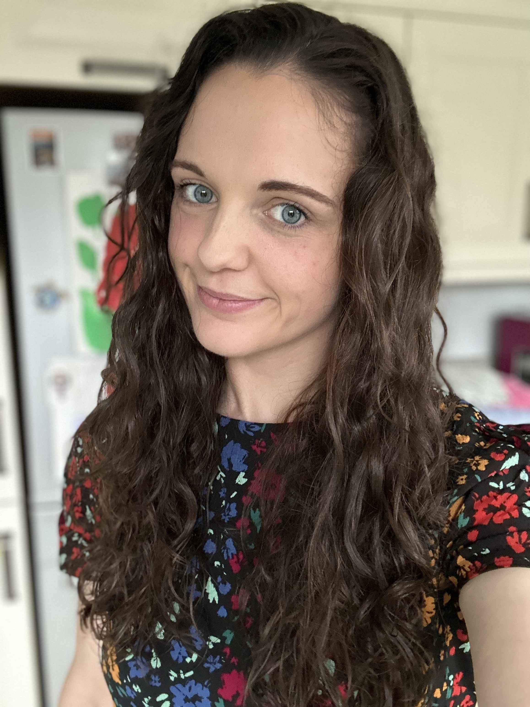

Ashleigh Harbinson

Summany
I am a young, driven indiviual who is dedicated and willing to always learn and improve her skills.
Education
Foundation Degree in Computer Science - University of Ulster (2020 - 2022)
Distinction
HND in Photography - SRC Lurgan (2011 - 2013)
Distinction
National Diploma in Media Production - NRC Ballymena (2009 - 2011)
Merit, Merit, Pass
GCSE's - Cambridge House Grammar School Ballymena (2004 - 2009)
- English - B
- Learning for Life and Work - B
- Art and Design - C
- Double aware Science - CC
- Mathematics - C
Work Experience
Customer Support Advisor - Radius Connect Solutions
August 2022 - Present
- Answered customer inquiries via phone and email
- Communicated with various networks to resolve customer issues
- Troubleshooted to resolve problems for mobile, landlines, hosted and broadband issues
- Scheduled Open Reach Engineers to go on site to repair issues when needed
Personal Assistant
February 2022 - August 2022
- Carrying out messages
- Cooking
- Cleaning
- Ironing
- Dog Walking
Barista - Follow Coffee
August 2020 - August 2021
- Serving on till
- Serving food and coffee to customers
- Clearing tables
- Stock rotation
Skills
- Customer Service: ⭐️⭐️⭐️⭐️⭐️
- Problem Solving: ⭐️⭐️⭐️⭐️
- Communication:⭐️⭐️⭐️⭐️
- Organisational Skills: ⭐️⭐️⭐️⭐️
- Microsoft Office Suite: ⭐️⭐️⭐️⭐️
- Career Development: ⭐️⭐️⭐️⭐️
Awards and Certifcations
- Security Fundimentals - Microsoft MTA's (June 2022)
Other
- My Hobbies
- Contact Me
© Ashleigh Harbinson. All rights reserved